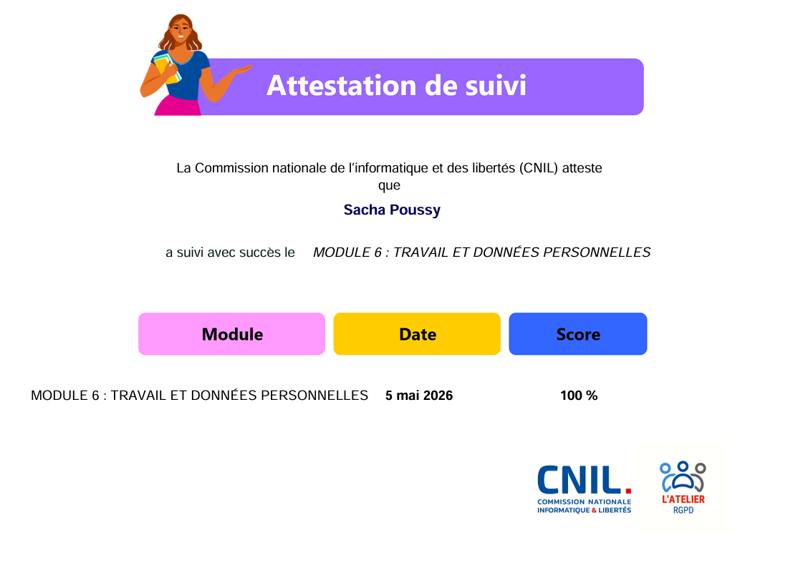
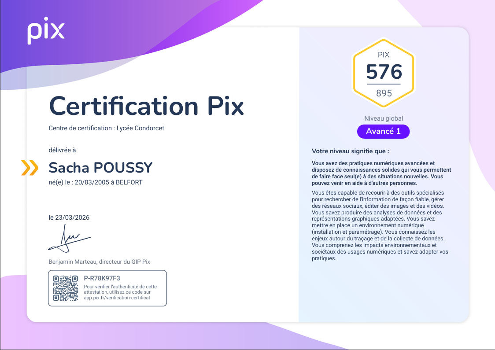
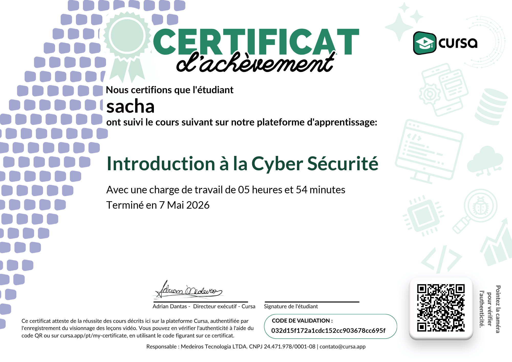
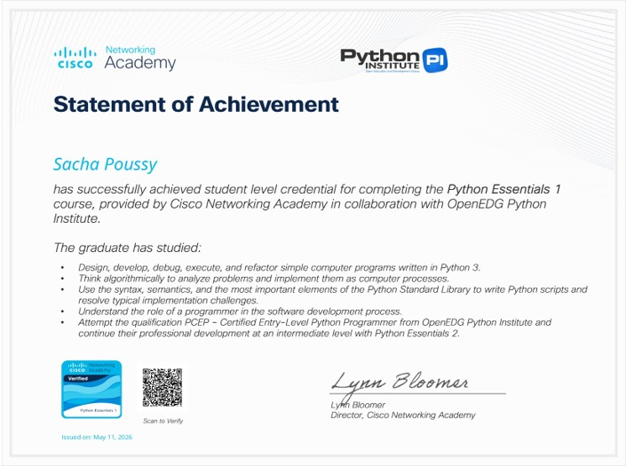

Certifications obtenues en autonomie pour approfondir mes compétences numériques et réglementaires.
En parallèle de mon BTS SIO et de mon alternance chez le Groupe Vittori, je me forme régulièrement afin d'élargir mes compétences et de rester à jour sur les évolutions du numérique, de la réglementation et des outils professionnels.

Maîtrise des principes fondamentaux du RGPD : droits des personnes, obligations des responsables de traitement, sécurité des données et rôle de la CNIL.
Certification nationale évaluant les compétences numériques sur 5 domaines : informations et données, communication, création de contenu, protection et sécurité, environnement numérique.


Formation suivie sur la plateforme Cursa permettant d'acquérir de nouvelles compétences techniques en autonomie, avec validation par un certificat officiel.
Certification Python Essentials 1 délivrée par la Cisco Networking Academy en partenariat avec l'OpenEDG Python Institute : syntaxe Python, logique algorithmique, débogage et conception de programmes simples.

Approfondir mes connaissances sur des langages
Acquérir une certification sur les bonnes pratiques pour maîtriser la sécurité de mes applications web.
Poursuivre ma veille sur les évolutions réglementaires et techniques, notamment autour du RGPD et de la protection des données.